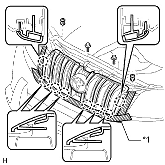
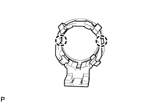

УЛЬТРАЗВУКОВОЙ ДАТЧИК (передний) > СНЯТИЕ |
| 1. СНИМИТЕ ВЕРХНЕЕ УПЛОТНЕНИЕ КРОНШТЕЙНА РАДИАТОРА |
Освободите 13 фиксаторов и снимите верхнее уплотнение кронштейна радиатора.
| 2. СНИМИТЕ ЛЕВОЕ БОКОВОЕ УПЛОТНЕНИЕ ПЕРЕДНЕГО БАМПЕРА |
 |
Освободите 4 фиксатора и снимите боковое уплотнение переднего бампера.
| 3. СНИМИТЕ ПРАВОЕ БОКОВОЕ УПЛОТНЕНИЕ ПЕРЕДНЕГО БАМПЕРА |
| 4. СНИМИТЕ РЕШЕТКУ РАДИАТОРА |
|  |
Наклейте защитную клейкую ленту вокруг решетки радиатора.
Освободите 2 фиксатора и выверните 2 болта.
Расцепите 8 захватов и снимите решетку радиатора.
| *1 | Защитная клейкая лента |
| 5. СНИМИТЕ НАКЛАДКУ ПЕРЕДНЕГО БАМПЕРА |
Наклейте защитную ленту вокруг накладки переднего бампера.
Выверните 2 болта A и 2 болта B.
Выверните 6 винтов и освободите 6 фиксаторов.

| *1 | Защитная клейкая лента | *2 | Болт A |
| *3 | Болт B | - | - |
Освободите 12 захватов.
Для моделей с сенсорной системой помощи при парковке TOYOTA и противотуманными фарами:
Отсоедините 3 разъема.
Для моделей с сенсорной системой помощи при парковке TOYOTA без противотуманных фар:
Отсоедините разъем.
Для моделей без сенсорной системы помощи при парковке TOYOTA и с противотуманными фарами:
Отсоедините 2 разъема.
Для моделей с системой очистителей фар:
Отсоедините шланг очистителя фар.
Снимите облицовку переднего бампера.

| *1 | Защитная клейкая лента | - | - |
| 6. СНИМИТЕ УЛЬТРАЗВУКОВОЙ ДАТЧИК № 1 |
 |
Отсоедините разъем.
Освободите 2 захвата и снимите ультразвуковой датчик № 1.
| 7. СНИМИТЕ ДЕРЖАТЕЛЬ УЛЬТРАЗВУКОВОГО ДАТЧИКА № 1 |
|  |
Освободите 2 захвата и снимите держатель ультразвукового датчика № 2.